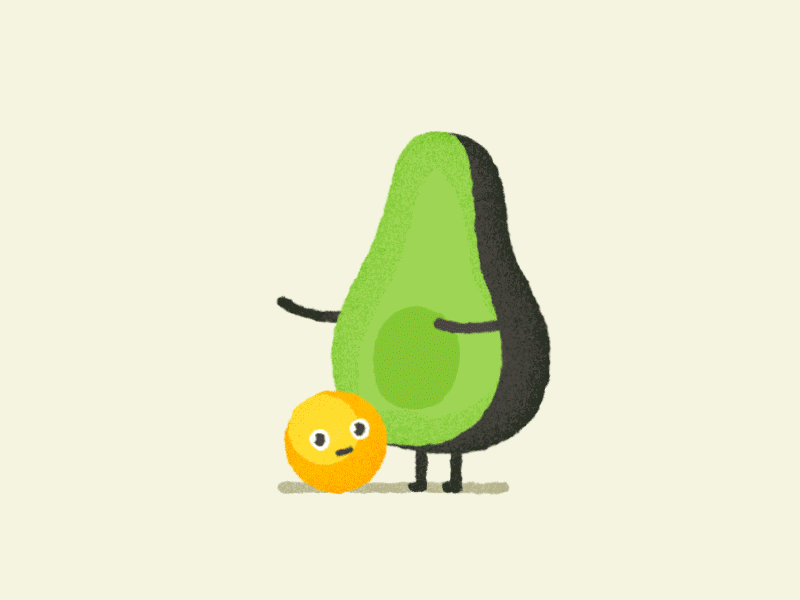

Consejos de un ilustrador:
Emodíaz comparte sus consejos imprecindibles para sobrevivir como ilustrador, diseñador o creativo ocupado.
Este decálogo recoge consejos básicos y extremadamente útiles acerca de rutinas necesarias y vicios(como quedarnos en pijama todo el día)que debemos evitar.La pereza es el peor enemigo de la creatividad y Emodíaz nos da algunas pautas de como combatirla:"sé curioso","aprende cosas nuevas", "experimenta"...
El despertador, es tu amigo.¡Madruga!
¡Que no te posea la pijama!¡Espabílate!
Ponte tu horario.
¡Sé tu propio jefe!
Es dificil pero...
¡alejate de internet!
Dibuja y garabatea.¡Todo el tiempo!
Aprende cosas nuevas.¡Investiga!
Queda con tus colegas.¡Sal de la cueva!
Observa tu entorno.¡sé curios@!
Haz cosas nuevas.¡Experimenta!
Y lo más importante.¡Confía en ti!
